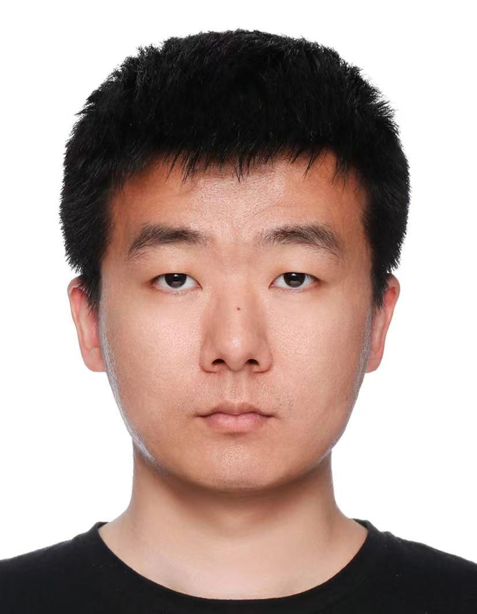

Hi, I am Yuhang Zang (臧宇航), a young researcher at Shanghai AI Laboratory. I obtained my PhD at the MMLab@NTU, Nanyang Technological University in 2023, supervised by Prof. Chen Change Loy.
Research Focus: My current research focuses on (1) post-training for multimodal LLMs, and (2) vision-language pre-training.

{kind=link}
- [06/2025] Visual-RFT, MM-IFEngine, X-Prompt, Bootstrap3D, Grounde CoT, Light-A-Video, MIR, SAM2Long were accepted by ICCV 2025.New!
- [05/2025] IXC-2.5-Reward and Light-ColPali were accepted by Findings of ACL 2025.New!
- [05/2025] VideoRoPE Oral and SongGen were accepted by ICML 2025.New!
- [02/2025] ByTheWay, OVO-Bench, Dispider, PyramidDrop and WildAvatar were accepted by CVPR 2025.
- [01/2025] MIA-DPO and MotionClone were accepted by ICLR 2025.
- [09/2024] MMLongbench-Doc Spotlight, ShareGPT4Video and MMDU were accepted by NeurIPS 2024 DB Track.
- [09/2024] InternLM-XC2-4khd, VideoStreaming and MMStar were accepted by NeurIPS 2024.
- [08/2024] VLMEvalKit was accepted by ACM MM 2024 Open Source Software Competition.
- [07/2024] Long-CLIP and MVSGaussian were accepted by ECCV 2024.
- [02/2024] Alpha-CLIP was accepted by CVPR 2024.
- [01/2024] My Apple internship project, O-GEN, was accepted by ICLR 2024.
- [06/2023] I joined
 Apple (AI/ML) as a research intern.
Apple (AI/ML) as a research intern.
- [12/2022] CascadeMatch was accepted by IJCV.
- [07/2022] OV-DETR was accepted by ECCV 2022 Oral.
New!
IEEE International Conference on Computer Vision (ICCV), 2025
Findings of the Association for Computational Linguistics (Findings of ACL), 2025
International Conference on Machine Learning (ICML), 2025 Oral
Neural Information Processing Systems (NeurIPS), 2024
Neural Information Processing Systems (NeurIPS), 2024 (Datasets and Benchmarks Track) Spotlight
International Conference on Learning Representations (ICLR), 2024
International Journal of Computer Vision (IJCV), 2024
arXiv 2022
International Journal of Computer Vision (IJCV), 2023
European Conference on Computer Vision (ECCV), 2022 Oral
IEEE International Conference on Computer Vision (ICCV), 2021
Current Interns (3)
Ziyu Liu
2023.10 - Present
PhD Student, Shanghai Jiao Tong University
Alumni (1)
Yubo Ma
2023 - 2024
PhD Candidate, Nanyang Technological University
Light-ColPali
Findings of ACL 2025
Area Chair:
Journal Reviewer:
Workshop Organizer:
Influential Paper
2025
Influential Paper
2024
2019
2020